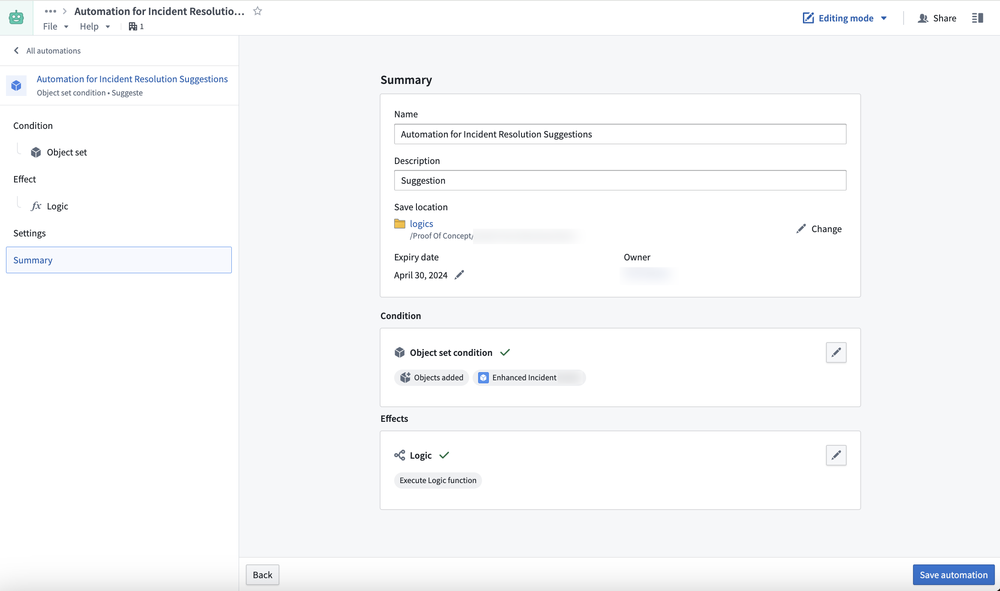
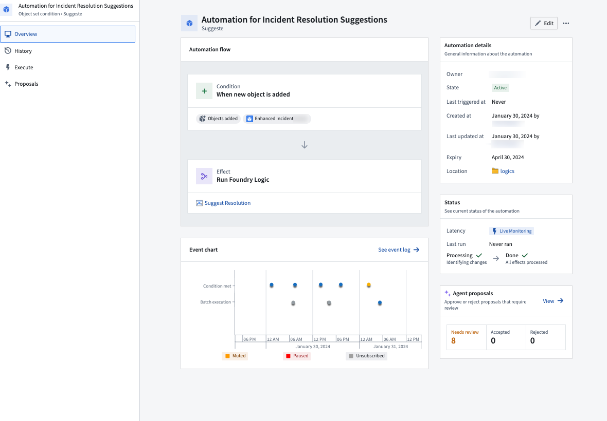
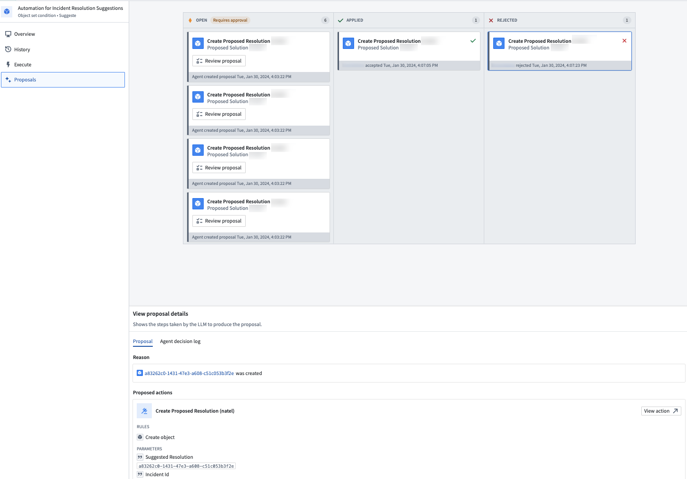

AIP Logic can now be automated such that Ontology edits can be automatically applied or staged for human review. These automations can be triggered on existing objects or when new objects are created.
:::callout{theme="neutral"} How an AIP Logic function can be called from Automate depends on whether staged writes execution mode is enabled:
To call a staged-write Logic function from Automate, you must first create an action type backed by the function, then use an action effect in the automation.
Actions generated from Logic functions support the same review workflow as legacy automations. You can configure the automation to stage actions as proposals for human review instead of applying them automatically.
For more details on creating and managing the action type, see staged writes in AIP Logic.
The workflow in this section applies to Logic functions that return a list of Ontology edits as their output, which is the legacy behavior when staged writes are disabled. These functions are called directly through the Logic effect.
You can start creating a new automation from your AIP Logic file using the Uses option on the right side.
Doing so will prompt a new window with a pre-populated automation flow based on your Logic instructions.

The condition you set up will monitor an object set and trigger the Logic effect for each new object added or automatically run edits. Learn how to set up an automation.
After confirming the name and settings of the new automation, select Save automation.
You will be redirected to the Automation Overview screen after saving.

The Overview screen displays the automation flow, status, and event chart which updates automatically when the automation is triggered.
If you configured your automation to stage Actions for approval over automatically running edits, you can see an overview of Agent proposals that were generated and require a review by navigating to the Proposals tab using the left side navigation bar.
To review these agent proposals, do one of the following:
On the Proposals tab, select a specific proposal to inspect the reason it was created.

Additionally, the proposed Action will be previewed at the bottom of the screen. By selecting the Agent decision log tab under View proposal details, you can inspect the decision process the LLM followed to generate the proposed Action.
When you accept a proposal, the Action will be automatically executed, and the proposal card will be moved to the Applied column.
The following are some frequently asked questions about the AIP Logic integration.
For security considerations, open proposals are visible for only 24 hours and only to the user who created the automation. Older proposals will not be visible.
The AIP Logic output must return an Ontology edit for the Automation to run.
The existing automation continues to run against the previously published legacy version of the function. If the function's output type is a list of Ontology edits, enabling or disabling staged writes publishes a new major version, because the output type will change to a different type based on the Logic configuration. Automations do not automatically upgrade across major versions.
To migrate the automation to the staged-write version:
For more details, see migrate existing automations.
Ensure that the AIP Logic input is an object.